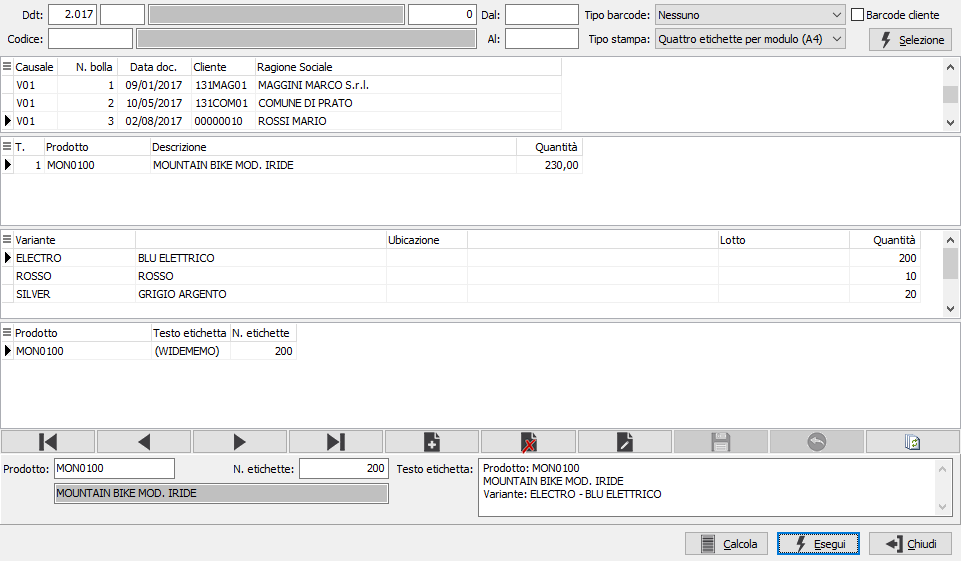

Stampa etichette colli
Il programma consente di stampare le etichette selezionando i prodotti direttamente dalle righe dei Ddt.
La finestra è divisa in tre sezioni: la sezione superiore include i limiti di selezione dei documenti, al centro ci sono due griglie in cui compaiono rispettivamente riferimenti ai singoli Ddt e righe del Ddt evidenziato dalla freccia sulla sinistra; l'ultima sezione contiene il pannello nel quale inserire i dati per la stampa.

RIF. DDT: i tre campi contengono rispettivamente anno, causale e numero del documento per cui si vuole effettuare la selezione. Confermando a vuoto, la selezione inizia dal primo documento compatibile con i successivi parametri.
TIPO BARCODE: definisce se stampare il codice a barre per i prodotti ed il tipo di codice a barre da stampare.
BARCODE CLIENTE: definisce se deve essere utilizzato il codice a barre valido per il cliente (casella con segno di spunta) oppure un eventuale codice a barre interno definito per il prodotto (casella bianca). L'utilizzo di questa opzione è subordinato al valore del campo precedente.
CODICE: eventuale codice del cliente, presente in anagrafica, per cui si vuole effettuare la selezione. Sul campo sono attive le funzioni di ricerca (F9).
DA DATA: eventuale data del documento da cui deve iniziare l’analisi dei documenti relativamente ai precedenti parametri di selezione. Confermando a vuoto, l’analisi inizia con il primo documento valido.
A DATA: eventuale data del documento con cui si desidera terminare l’analisi dei documenti relativamente ai precedenti parametri di selezione. Confermando a vuoto, l’analisi si conclude con l'ultimo documento valido.
TIPO STAMPA: definisce il tipo di modulo per la stampa; valori possibili: 4 etichette per modulo (A4), 1 etichetta per modulo (A4).
Dopo aver premuto il pulsante Selezione verranno visualizzati i documenti trovati ed i loro righi nelle rispettive griglie. Facendo doppio clic sul prodotto, i dati vengono inseriti nel pannello di input e rimane solo da inserire il numero di etichette da stampare. È comunque possibile inserire un prodotto non relativo al documento inserendolo manualmente nel campo Prodotto; nella stampa risulterà riferito comunque al Ddt che era selezionato al momento dell'inserimento del prodotto.